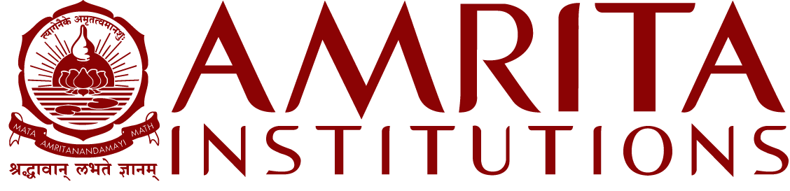

Amrita Vishwa Vidyapeetham
Amrita Vishwa Vidyapeetham (or Amrita University) is a private deemed university based in Coimbatore, India.
It currently has 7 campuses with 16 constituent schools across the Indian states of Tamil Nadu, Kerala, Andhra Pradesh and Karnataka with the headquarters at Ettimadai, Coimbatore, Tamil Nadu.[9]
It offers a total of 207 undergraduate, postgraduate, integrated-degree, dual-degree, doctoral programs in engineering and technology, medicine, business, arts and culture, sciences, biotechnology, agricultural sciences, allied health sciences, Ayurveda, dentistry, pharmacy, nursing, nano-sciences, commerce, humanities and social sciences, law, literature, spiritual studies, philosophy, education, sustainable development, mass communication and social work.
History
The university was founded with the opening of Amrita School of Engineering, Coimbatore in 1994 by Mata Amritanandamayi Devi and is managed by her international humanitarian organisation Mata Amritanandamayi Math.
In 2003, it became one of the youngest institutes to be accredited as a deemed to be university by the UGC.[10] In 2002, campuses in Amritapuri and Bangalore were started.[11][12]
Campuses
Amritapuri Campus
The university has six campuses, with 15 constituent schools in rural and urban sites in four south Indian states – Tamil Nadu, Kerala, and Karnataka.[9]
The first to be established was the Coimbatore campus in 1994, with the opening of Amrita School of Engineering at Ettimadai, a village about 20 km east of Coimbatore.
Amrita Institute of Medical Sciences (AIMS) in Edapally, Kochi was inaugurated on 17 May 1998 by the then Prime Minister, Atal Bihari Vajpayee.
Later in 2002, two campuses were opened, one urban campus at Bengaluru, and one rural campus in Amritapuri village, which also hosts the headquarters of the Mata Amritanandamayi Math that runs the university.
In 2019, an engineering campus was opened at Chennai.
Currently, two new healthcare campuses are being constructed at Faridabad, Haryana[13] and Amaravati, Andhra Pradesh.[14]